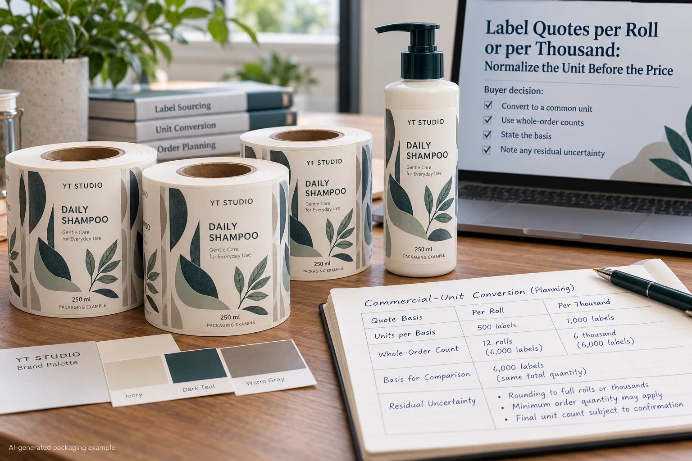
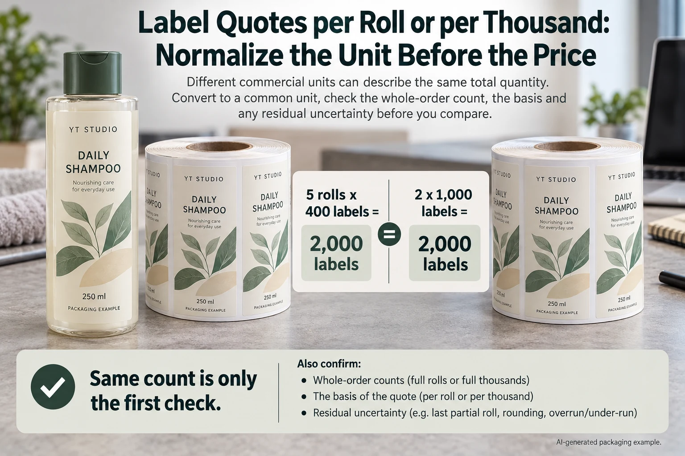

One shampoo-label quote gives a price per roll. Another prices a thousand labels. The unit numbers look easy to compare, so the buyer starts negotiating the lower one. The missing detail is how many of the required printed designs each commercial unit actually contains.
Convert each proposal into an explicit count by design and component before comparing the money. Then separate count, charge basis and scope. The same number of physical labels is a necessary comparison point; it does not establish identical construction or commercial terms.

Ask what the quoted unit contains
A roll is a supplied handling unit. Its label count must be stated. A sheet can contain several label positions. A set can contain a front, a back or another agreed combination. The word thousand may describe a price basis rather than a minimum purchasable increment.
Request the count and design composition in writing. Do not infer them from the roll diameter, a product photograph or the label count supplied on a previous job. A familiar physical format can be wound with different quantities.
Keep artwork versions separate. If a proposal says ten rolls across three scents, ask how those rolls are divided and how many labels each version receives. A correct combined total can still leave the required product mix unspecified.
Normalize quantities before calculating a rate
Use a simple hypothetical count. Five rolls containing 400 labels each represent 2,000 labels. A quotation expressed as two quantities of 1,000 also represents 2,000 labels, if that is the acknowledged charge and supply basis. The arithmetic says nothing about their prices.
For a multi-component pack, expand the set into its components. If 1,000 sets each contain one front and one back, the plan includes 1,000 fronts and 1,000 backs. Calling that 2,000 labels can be useful for a physical count, but it must not conceal which components the supplier actually prices or delivers.
Our quantity reconciliation guide covers the acknowledged order and usable delivery. This article addresses the earlier obstacle of comparing commercial units; neither task can be solved by copying a single total into every SKU row.
Use a unit-normalization worksheet
| Field | Proposal A | Proposal B |
|---|---|---|
| Design and component | Name each approved version | Use the same version list |
| Quoted unit | Roll, sheet, set, label or price basis | Record the actual stated basis |
| Contents per unit | Confirmed label or component counts | Confirmed label or component counts |
| Order quantity | Number of purchased units | Number of purchased units |
| Expanded supply | Units multiplied by their contents, by design | The same explicit calculation |
| Charge treatment | Minimums, rounding and separately priced lines | Obtain written clarification rather than assume |
Complete the identity and unit rows. Expand the acknowledged supply for every design. Compare it with the required mix, then ask the supplier to clarify any rounding or minimum charge treatment. Leave unknowns visible; a blank count cannot be converted into a reliable rate.
If the supplier gives a per-thousand rate, ask whether a partial thousand is charged proportionally or under another arrangement. This guide supplies no default billing rule. The response belongs beside the original quote so the buyer can explain the total rather than reverse-engineer it.

Choose a denominator that describes the actual question
After the unit and charge basis are confirmed, a rate for an identified scope can be calculated as that cost divided by the corresponding quantity. Label the result: print cost per supplied label is different from delivered-order cost per required complete pack.
A hypothetical order total of 120 currency units for 2,000 supplied labels gives 0.06 per supplied label for that stated scope. These are invented arithmetic inputs, not market prices or a YT Labels offer. Adding another cost or changing the denominator changes the question being answered.
Do not compare one quote's print-only unit rate with another's complete delivery total. The delivery-scope guide covers that separate issue. Match currency and tax treatment explicitly too; this worksheet performs no exchange-rate conversion.
Two buyers may prefer different supply arrangements
A hypothetical hand-application project can accept several manageable sheets if the confirmed count and version mix fit its work. It should compare the actual purchased quantity and scope, not dismiss the format because another proposal is priced per roll.
An OEM line can require a specific roll build. A nominally cheaper count does not settle whether those rolls meet the operator's requirements. Confirm the format with the receiving operation and keep any necessary conversion or handling service in the cost scope.
Neither situation makes a roll inherently economical. The useful comparison joins a usable delivery arrangement to acknowledged counts and charges. Price language is only one part of that record.
Stop at the unexplained unit
Hold comparison if the count per roll is missing, a set is undefined, design allocation is unknown or the proposed billing basis does not reconcile with the total. Ask for a revised or clarified quotation before choosing a supplier from the smallest printed number.
For shampoo and wash-care labels, send dimensions, approved artwork, quantity by design, intended format and application method. Include the count basis you need the supplier to acknowledge and the actual delivery destination.
The inquiry form prepares a message. Send the comparison worksheet and artwork by email or WhatsApp; the form does not upload attachments. Ask for a proposal whose quantities and charge units purchasing can trace without guessing.